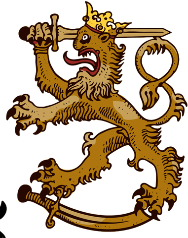
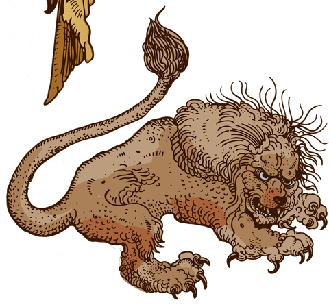

Joined Hands — Holder
Spool-leaning wards, barriers, and slows. Reinforces a sturdier holding-circle and advances the containment Working faster — a measured, defensive hold with lower strain pressure.

A side-view 2D pixel tower-defense × roguelite set in the world of The Hook and Skein. Hold a Joined-Hands holding-circle in the Scar borderlands while the Otherworld pushes Vrakoni and Hooked Ones through the In-Between.

In the Scar borderlands — Cut territory where the boundary is worn thin — a Joined-Hands holding-circle is performing a containment Working to seal a breach. If the casters fall, the Working breaks.
You stand between the breach and the circle. Between waves, the Skein regenerates and you pre-place wards across the approach. When the wave breaks, Hooked Ones, pack handlers, and Vrakoni war-beasts surge from the breach toward the casters.
Survive all five escalating waves until the hold-light fills and the breach-window closes. Lose the circle's integrity — or lean too hard on the Tension until your power_strain reaches the End State and you are Taken — and the stand is lost.
Spool-leaning wards, barriers, and slows. Reinforces a sturdier holding-circle and advances the containment Working faster — a measured, defensive hold with lower strain pressure.

Tension force Workings paired with mending — able to repair circle integrity and shed accumulated strain, with hardened resistance against proximity Rust. High force, high strain risk.
Channel Spool for clean, precise wards and slows, or lean on Tension for immediate destructive force at the cost of rising strain. (The Fray is a hazard, never a player school.)
Track your power_strain across six stages — Clear, Shock, Fracture, Hooked, Revelation-Break, Taken, End State. Both Tension Workings and close proximity to Vrakoni/Hooked Ones drive it upward.
Vrakoni packs are driven by a Hooked-One handler. Cut the handler down first and the command-link snaps — causing linked Vrakoni to collapse or turn feral before burning out.
localStorage (Reinforced Ward at 1 win, Deeper Skein at 2 wins)Scarward (working title) and The Hook and Skein™ are original game projects by Burnt Thumb Works. © 2026 Burnt Thumb Works. All rights reserved.